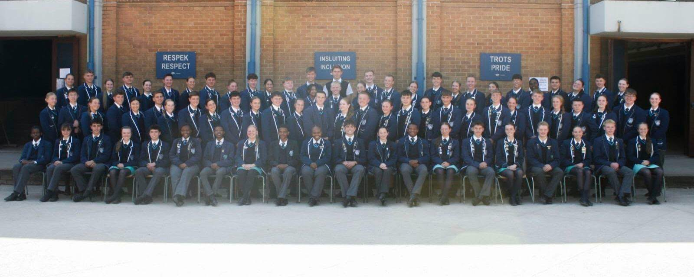
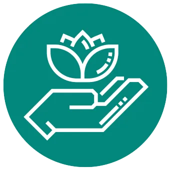
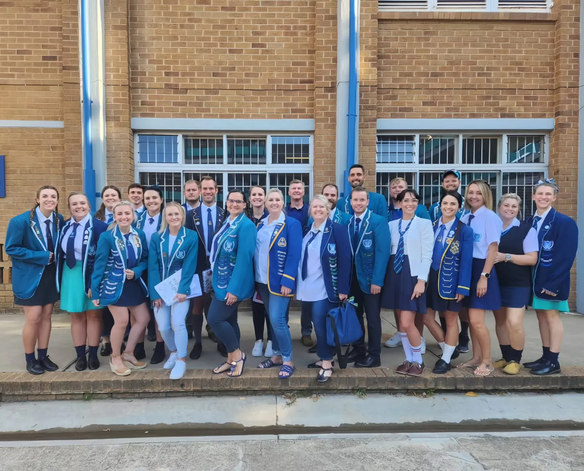
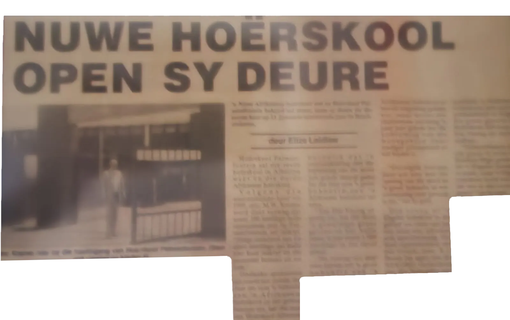
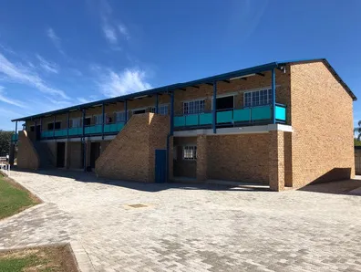

Ons VisieOur Vision
Om ons leerders te bemagtig vir die toekoms.To empower our learners for the future.

'n Jong, dinamiese skool met 'n groeiende tradisie — gebou deur passievolle personeel, talentvolle leerders, ondersteunende ouers en die gemeenskap.A young, dynamic school with a growing tradition — built by passionate staff, talented learners, supportive parents and the community.
Visie & MissieVision & Mission
Om ons leerders te bemagtig vir die toekoms.To empower our learners for the future.
By Hoërskool Dinamika is ons trots op ons skooltradisies, etos en toeganklikheid. Ons is 'n waardegebaseerde skool wat daartoe verbind is om bekwame, goedafgeronde, beleefde en sosiaal verantwoordelike jongmense te ontwikkel wat met selfvertroue die toekoms ingaan.At Hoërskool Dinamika we take pride in our school traditions, ethos and approachability. We are a values-based school committed to developing competent, well-rounded, polite and socially responsible young people, equipped to face the future with confidence.
Ons FondasieOur Foundation
Ons mikpunt is dat leerders by Dinamika sal floreer en hul volle potensiaal sal bereik. Ons glo dat hierdie vier pilare ons leerders sal toerus om eendag sukses te behaal.Our goal is for learners to thrive at Dinamika and reach their full potential. We believe these four pillars will equip our learners to succeed one day.
Vakspesialiste, tegnologie en 'n wye vakkeuse.Subject specialists, technology and a broad choice of subjects.
MeerMoreOrde en bestendigheid deur verhoudings, insentiewe en gevolge.Order and consistency through relationships, incentives and consequences.
MeerMoreWaardes wat leerders help om die regte pad in die lewe te volg.Values that help learners follow the right path in life.
MeerMore
Sport, kultuur en sosiale lewe — die kind in totaliteit.Sport, culture and social life — the whole child.
MeerMoreWaardesValues
Waardes is positiewe onderrig wat ons help om die regte pad in die lewe te volg. 'n Kind wat met 'n goeie waardestelsel grootword, word 'n verantwoordelike volwassene wat tussen reg en verkeerd kan onderskei.Values are the positive teachings that help us follow the right path in life. A child who grows up with good values becomes a responsible adult who can distinguish between right and wrong.

Ons GeskiedenisOur History
Van 'n samesmelting van twee skole tot 'n parallelmediumskool vir die hele Alberton-gemeenskap.From the merger of two schools to a parallel-medium school for the whole Alberton community.
Hoërskool Palmietfontein en Hoërskool Die Varing het besluit om saam te smelt. Die Varing se gebou sou as die nuwe skoolgebou dien. Die nuwe skool het sy deure op 6 Oktober 1993 met amper 900 leerders oopgemaak, met mnr. André Bouwer as eerste waarnemende hoof.
Hoërskool Palmietfontein and Hoërskool Die Varing decided to merge, with Die Varing's building serving as the new school building. The new school opened its doors on 6 October 1993 with almost 900 learners, with Mr André Bouwer as the first acting principal.

Mnr. Dieter Böhmer word as die eerste permanente hoof aangestel. Hy was baie ingestel op akademie, Christelike waardes en dissipline.
Mr Dieter Böhmer is appointed as the first permanent principal. He was strongly focused on academics, Christian values and discipline.
Mnr. Vollaard word die tweede hoof — 'n mensemens wat vir sy personeel en leerders omgegee het, met 'n groot liefde vir sport.
Mr Vollaard becomes the second principal — a people person who cared deeply for his staff and learners, with a great love for sport.
Mnr. Johan Schutte word as waarnemende hoof aangestel. Sy eerste groot verandering is om van Dinamika 'n parallelmediumskool te maak — 'n meer toeganklike skool vir leerders in Alberton.
Mr Johan Schutte is appointed acting principal. His first major change is to make Dinamika a parallel-medium school — a more accessible school for learners in Alberton.
Mnr. Schutte word permanente hoof. Projektors word in elke klaskamer geïnstalleer, spesialisonderwysers en sportafrigters word aangestel, en die skool word op vier pilare bestuur: akademie, dissipline, holistiese ontwikkeling en Christelike waardes.
Mr Schutte becomes permanent principal. Projectors are installed in every classroom, specialist teachers and sports coaches are appointed, and the school is run on four pillars: academics, discipline, holistic development and Christian values.
Die skoollied word in Dinamika se twee onderrigtale herskryf. Die V-blok word gebou om plek te maak vir die groeiende getal leerders — vyf ekstra klaskamers en een werkswinkel.
The school anthem is rewritten in Dinamika's two languages of learning and teaching. The V block is built to make room for the growing number of learners — five extra classrooms and one workshop.

'n 80 kVA-kragopwekker verseker dat elke klas tydens beurtkrag elektrisiteit het, en 'n energiekomitee beplan fase 2 met sonkrag en batterye. Fase 1 van die boorgat word voltooi — die boorgat is geboor en ons het water.
An 80 kVA generator ensures every classroom has power during load shedding, and an energy committee is planning phase 2 with solar power and batteries. Phase 1 of the borehole is completed — the borehole has been drilled and we have water.
Dissipline & BeradingDiscipline & Counselling
Alle skole moet 'n volledige dissiplinêre beleid hê wat op die Suid-Afrikaanse Skolewet gebaseer is. Ons meriete-en-demerietestelsel maak dit prakties en maklik om te verstaan.All schools must have a full disciplinary policy based on the South African Schools Act. Our merit-and-demerit system makes it practical and easy to understand.
Ons stelsel staan op drie eenvoudige bene:Our system stands on three simple principles:
SkooldragSchool Uniform
Skooleenheid en trots is een van die maniere waarop ons ons missie bereik. Elke leerder dra sy of haar skool- en sportdrag as 'n ambassadeur van die skool.School unity and pride is one of the ways we achieve our mission. Every learner wears their school and sports attire as an ambassador of the school.
| MeisiesGirls | SeunsBoys |
|---|---|
| Romp (teal)Skirt (teal) | Kortbroek (grys)Shorts (grey) |
| Hemp (wit met skoolwapen)Shirt (white with school badge) | |
| Das (navy & teal)Tie (navy & teal) | |
| Baadjie (navy met skoolwapen)Blazer (navy with school badge) | |
| Trui en kortmoutrui (navy & teal)Jersey and pullover (navy & teal) | |
| Kort sokkies (navy)Short socks (navy) | |
| Skoolskoene (swart)School shoes (black) | |
| MeisiesGirls | SeunsBoys |
|---|---|
| Romp (teal)Skirt (teal) | Langbroek (grys)Long pants (grey) |
| Hemp (wit met skoolwapen)Shirt (white with school badge) | |
| Das (navy & teal)Tie (navy & teal) | |
| Baadjie (navy met skoolwapen)Blazer (navy with school badge) | |
| Trui en kortmoutrui (navy & teal)Jersey and pullover (navy & teal) | |
| Sykouse of lang sokkies (navy)Tights or long socks (navy) | Kort sokkies (navy)Short socks (navy) |
| Skoolskoene (swart)School shoes (black) | |
Verpligtend op Dinsdae en by amptelike skoolfunksies. Sonder 'n das word 'n oopknoophemp gedra. Truie mag met of sonder baadjie en das gedra word.Compulsory on Tuesdays and at official school events. Without a tie, an open-neck shirt is worn. Jerseys may be worn with or without a blazer and tie.
Vrydaghemp, blou denims en wit tekkies. Op koue dae mag die skooltrui, sweetpakbaadjie of bomber-baadjie gedra word.Friday shirt, blue denims and white sneakers. On cold days the school jersey, tracksuit jacket or bomber jacket may be worn.
Elke sportsoort het sy eie drag — atletiek, krieket, netbal, hokkie, rugby, tennis, fietsry, ruiterkuns en hengel. Skoolsweetpakke word na sportbyeenkomste gedra.Each sport has its own kit — athletics, cricket, netball, hockey, rugby, tennis, cycling, equestrian and angling. School tracksuits are worn to sports events.
SkoolliedSchool Anthem
In 2022 herskryf in ons twee onderrigtale.Rewritten in 2022 in both our languages of instruction.
In Albertonian borders
where the industries create,
here our school stands well established,
we can all to God relate.
In ons plig aan die gemeenskap
sal ons na die hoogste streef,
om Hoërskool Dinamika
in ons dade te laat leef.
Reik na die Lig ons leuse,
dis ons lewensideaal.
Reik na die Lig bly ons keuse,
so sal ons sukses behaal.